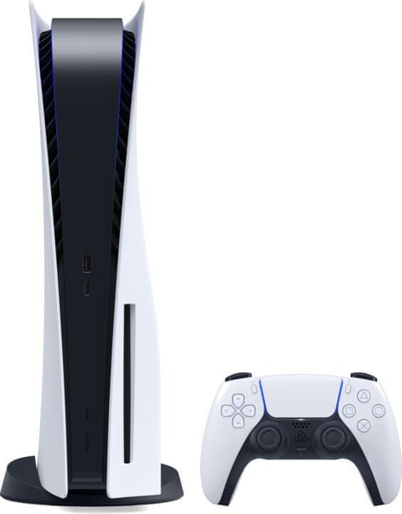
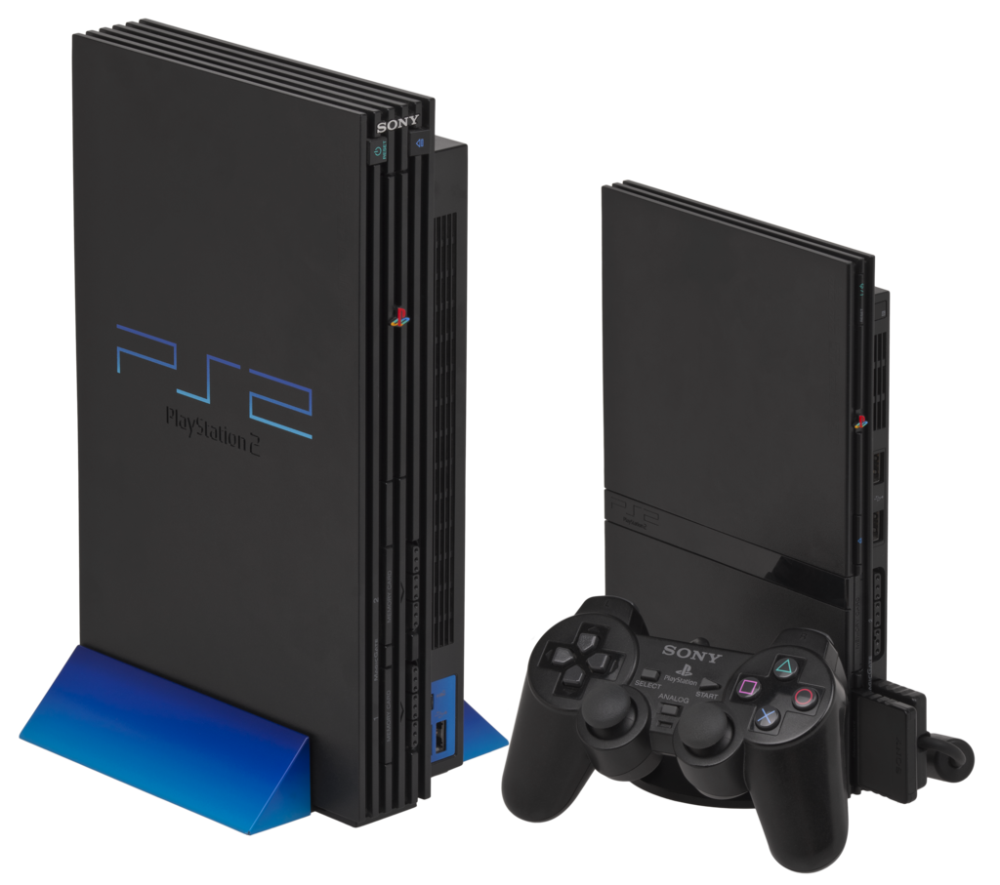

Nejlepší hry pro PlayStation 4
PlayStation 5
PlayStation 5 (PS5) je herní konzole deváté generace od japonské společnosti Sony Interactive Entertainment. Zahájení prodeje proběhlo v listopadu 2020.
Historie PS5:
Hlavní architekt poprvé veřejně popsal novou konzoli v dubnu 2019. Sony potvrdila, že nový hardware je ve vývoji, ale nebude dodáván dříve než v dubnu 2020. Při jejím vývoji byla klíčovou otázkou délka doby načítání her, důležitým cílem bylo najít způsoby, jak zkrátit dobu načítání. Sony také zkoumalo proveditelnost „levné varianty“ PS5, podobně jako u Xbox Series S a dospěli k závěru, že takové konzole nedopadnou dobře a příliš rychle zastarají.
Představení proběhlo 11. června 2020 a zahájení prodeje v Evropě začalo 19. listopadu 2020. Předobjednávky však byly vyprodané během prvních hodin a další dodávky do Česka přišly až v únoru 2021. Ředitel zábavní divize Sony se omluvil za nedostatek konzolí, ačkoliv prý bylo na trh dodáno více kusů než při startu předchozí generace. Příčinou jejich nedostatku jsou chybějící čipy z Asie, i rok po uvedení se v Česku tato konzole kupuje na předobjednávku na kterou se čeká několik měsíců
Ovladač DualSense
DualSense (CFI-ZCT1W) je PlayStation 5, s řízením a byl odhalen 7. dubna 2020. Je založen na DualShock 4 řídicí jednotky, která přišla před ním, ale s vývojem ke svým designem a možností ovlivněných diskusích s návrháři hry a hráči.
Na rozdíl od předchozích ovladačů DualShock má DualSense dvoubarevné barevné schéma (primárně bílé s černým povrchem) a monochromatická akční tlačítka, což znamená, že akční tlačítka u standardního ovladače PlayStation nejsou barevná, ačkoli kapesní konzole Sony, PlayStation Vita a PlayStation Portable , oba měly monochromatická tlačítka. Zahrnuje ergonomičtější design, který je znatelně větší, kulatější a mohutnější než DualShock 4. Světelná lišta byla přesunuta z horní části ovladače na levý a pravý okraj touchpadu, přičemž číslo hráče je místo toho indikováno polem 5 LED pod touchpadem. Tlačítko „Sdílet“ bylo nahrazeno tlačítkem „Vytvořit“ s rozšířeným zaměřením na vytváření obsahu, který lze sdílet s ostatními
PlayStation 3
Herní zařízení PlayStation 3 (nejprve značeno PLAYSTATION 3, po příchodu slim verze jako PlayStation 3 nebo i PS3) je v pořadí třetí konzole od společnosti Sony Computer Entertainment, je to nástupce konzole PlayStation 2 a zařazuje se do rodiny herních konzolí PlayStation. PlayStation 3 se zrodil v sedmé generaci konzolí a soupeří s konzolemi Xbox 360 od Microsoftu a Wii od Nintenda.
PlayStation 3 byl poprvé vydán 11. listopadu 2006 v Japonsku, 17. listopadu 2006 v Severní Americe, 16. března 2007 ve Spojeném království a Irsku a nakonec 23. března 2007 v Evropě a Oceánii. V den vydání byly na trhu dvě verze, první měla pevný disk o velikosti 20GB a druhá verze s kapacitou pevného disku 60GB, která měla i několik funkcí navíc, model s 20GB pevným diskem nebyl nikdy vydán v Evropě a Oceánii. Od vydání konzole bylo vydáno několik revizí konzole, největší změnou bylo uvedení slim modelu v září 2009, který s sebou přines nové logo konzole a i jiný typ psaní jména konzole.
Historie PS3:
Sony oficiálně odhalila PlayStation 3 (propagováno jako PLAYSTATION 3) 16. května 2005 na herní konferenci E3 2005, konzoli představila s ovladačem v bumerangovém stylu. Funkční model konzole zde představen nebyl, ale ani v září 2005 na Tokyo Game Show, ačkoli Sony u obou výstav pořádala předváděcí akce pro demonstraci výkonu konzole, kde předváděla hru Metal Gear Solid 4: Guns of the Patriots a technologické demo hry Final Fantasy VII. Počáteční prototyp konzole byl k vidění v květnu 2005, který obsahoval dva HDMI porty, tři síťové Ethernet porty a šest USB portů.
Když byla konzole znovu viděna o rok později na konferenci E3 2006, obsahovala už pouze jeden HDMI port, jeden Ethernet port a čtyři USB porty kvůli menším výrobním nákladům. Sony tehdy oznámila dva modely, které budou v prodeji den vypuštění na trh – 20GB (499€) a 60GB (599€) model. Model s kapacitou pevného disku 60GB obsahoval HDMI port na rozdíl od 20GB modelu, měl Wi-Fi internet, čtečku paměťových karet a chromový obal se stříbrným logem. Oba dva modely byly v den uvedení na trhu – 11. listopadu v Japonsku a 17. listopadu 2006 v Severní Americe.
Ovladač DualShock3
Bezdrátový ovladač DualShock 3 (SCPH-98050/CECHZC2), který byl ohlášen na Tokyo Game Show v roce 2007 , je gamepad pro PlayStation 3 . Nahrazuje bezdrátový ovladač Sixaxis původně vydaný v dřívějších verzích konzole. DualShock 3 je téměř identický s předchozí verzí Sixaxis, ale přidává funkce haptické zpětné vazby , které najdete u DualShock a DualShock 2. Sony urovnalo soudní spor o porušení patentu se společností Immersion v březnu 2007 po dlouhé právní bitvě . Osada uvolnila cestu pro začlenění chybějícího „rachotu“, který Sixaxis postrádal. Jak funkce vibrací, tak i schopnosti snímání pohybu DualShock 3 lze používat současně, aniž by jedna rušila druhou. Stejně jako Sixaxis má také port USB mini-B pro nabíjení a lze jej také použít na PSP Go přes Bluetooth , ačkoli ovladač a PSP Go musí být registrovány pomocí konzole PS3.
DualShock 3 lze identifikovat podle označení „DualShock 3“ a „Sixaxis“. Váží také 192 gramů (6,8 oz), o 40 % více než jeho předchůdce, Sixaxis, který vážil pouze 137,1 gramů (4,84 oz).
PlayStation 2
Sony PlayStation 2 je herní konzole šesté generace od firmy Sony Computer Entertainment uvedená 4. března 2000 v Japonsku. PS2 je nástupcem PlayStation, v roce 2006 byla nahrazena konzolí PlayStation 3. Hlavní konkurencí pro PS2 byl Xbox od Microsoftu a GameCube od Nintenda, a Sega Dreamcast od Segy.
Historie PS2:
PlayStation 2 se začala prodávat v březnu 2000 v Japonsku, za dva dny bylo prodáno 1 milion kusů. Totéž se událo v Severní Americe, kde se za první víkend prodalo 500 000 kusů. K 21. listopadu 2011 bylo prodáno celkem 153,6 milionů kusů a stala se tak nejprodávanější konzolí vůbec. Konzole byla tak populární, že její výroba byla ukončena měsíc před uvedením konzole PlayStation 4.
Ovladač DualShock 2
DualShock 2 Analog Controller (SCPH-10010) součástí PlayStation 2, s startu je téměř totožný s externě jako předchozí DualShock analogového regulátoru, s několika změnami drobné kosmetické. Má jiné umístění šroubu a o jeden šroub méně. Na horní straně ovladače bylo přidáno modré logo DualShock 2, konektor je více hranatý než u DualShocku a kabel i konektor jsou spíše černé než šedé. Standardní ovladač je černý (další barvy přišly později), spíše než šedý jako u původního DualShocku. Analogové páky jsou také znatelně tužší než na původním DualShocku.
Interně byl DualShock 2 lehčí a všechna tlačítka (kromě analogového režimu, tlačítka start, select, L3 a R3) byla čitelná jako analogové hodnoty (citlivé na tlak). DualShock 2 dokáže snímat 256 úrovní tlaku.
PlayStation (1)

PlayStation (též nazýváno jako PS, PS1) je herní konzole paté generace od společnosti Sony Computer Entertainment. Konzole byla vydána na trh nejprve v Japonsku 3. prosince 1994 a poté i ve zbytku světa v průběhu roku 1995. Tato konzole byla jako první z dnes velmi úspěšné rodiny PlayStation, která se dnes skládá z jak standardních konzolí, tak i přenosných variant. Jako součást 5. generace herních konzolí, PlayStation soupeřil s Nintendem 64 a SEGA Saturn. V roce 2000 na trh přišla zmenšená varianta původního modelu nazývána jako PSone. Nahradil tak původní šedý model a jeho jméno bylo upraveno, aby se předešlo nechtěným záměnám s následníkem v již 6. generaci herních konzolí, PlayStation 2.
PlayStation bylo první "zábavné zařízení", kterému se podařilo překonat pomyslnou metu 100 milionů prodaných kusů a to za 9 let a 6 měsíců od jeho uvedení. Reakce na konzoli po vydání byly velmi přívětivé díky kvalitě 3D zobrazení. CEO společnosti Microsoft, Bill Gates, dával přednost této konzoli před konkurencí a jeho slova byla: "Naši herní vývojáři mají toto zařízení od Sony v oblibě."
Historie PS1:
První koncepty PlayStationu se datují do roku 1986, když právě probíhaly společné zájmy mezi společnostmi Sony a Nintendo. Nintendo chtělo se Sony spolupracovat na CD-ROM přídavku pro konzoli Famicon. Tento produkt byl pak jmenován jako CD-ROM/XA. Ten umožňoval současný přístup ke kompresovaným audio / video souborům uložených na disku. Přídavek měl ale problémy. Diskovým systém Famicomu (tak se nazýval optický disk pro tento přídavek) byl velice náchylný na zničení dat, které obsahoval a neobsahoval žádnou protikopírovací ochranu, což vystavovalo hrozbu velkého počtu softwarového pirátění her. Když bylo CD-ROM/XA veřejně představeno, Nintendo bylo zaskočeno velmi přívětivými ohlasy a mělo tak do budoucna velký zájem o tuto technologii. Nintendo tak podepsalo se Sony další smlouvu opět na CD-ROM přídavek, ale tentokrát pro jejich vlajkovou loď – konzoli SNES.
Na začátku roku 1993 začala Sony pracovat na konzoli, která měla cílil na budoucí 5. generaci herních konzolí. Divize Sony v Severní Americe označována jako SCEA chtěla původně uvést konzoli pod jménem PSX kvůli sporadickému jménu Play Station, kvůli kterému měla Sony v minulosti problémy. Než byla ale konzole uvedena, nakonec se vedení společnosti rozhodlo konzoli uvést pod jménem PlayStation i kvůli tomu, že toto jméno bylo již známé. Když byla konzole veřejně představena, herní svět byl udiven zobrazovacími kvalitami tohoto zařízení. Pak šlo vše samo, na začátku roku 1994, tehdy jeden z nejčtenějších herních časopisů, GamePro, v jednom článku napsal: "Mnoho herních vývojářských studií cítí, že se v budoucnu budeme setkávat s konzolemi od Nintenda, SEGY... a Sony."
Ovladač DualShock
DualShock Analog Controller (SCPH-1200) je schopen poskytnout vibrační odezvu založenou na obrazovce akcí, které se konají ve hře (v případě, že hra podporuje IT), a poskytuje analogový vstup prostřednictvím dvou analogových páček . Jeho název je odvozen od použití dvou (duálních) vibračních motorů (šok). Tyto motory jsou umístěny v rukojetích ovladače, přičemž levý je větší a výkonnější než ten napravo, takže umožňuje různé úrovně vibrací. DualShock se liší od Nintendo 64 's Rumble Pakv tomto ohledu Rumble Pak používá pouze jeden motor. Rumble Pak využívá energii z baterie pro funkci vibrací, ale všechny kabelové varianty DualShocku využívají energii dodávanou PlayStation. Funkce dunění DualShocku je podobná jako u prvního vydání japonského duálního analogového ovladače , funkce, která byla odstraněna krátce po vydání tohoto ovladače.
DualShock, stejně jako jeho předchůdce, ovladač Dual Analog, má dvě analogové páčky. Na rozdíl od dřívějšího ovladače mají analogové páčky DualShock spíše texturované gumové rukojeti než hladké plastové špičky se zapuštěnými drážkami, které se nacházejí na ovladači Dual Analog. Mezi další rozdíly mezi Dual Analog a DualShock patří delší rukojeti a mírně větší tlačítka L2/R2. Ovladač Dual Analog má také další režim přístupný stisknutím tlačítka „Analog“, které poskytuje kompatibilitu s analogovým joystickem PlayStation, což má za následek, že se analogová kontrolka změní na zelenou místo červené; tato funkce byla v DualShocku odstraněna.
David Švancar © 2021